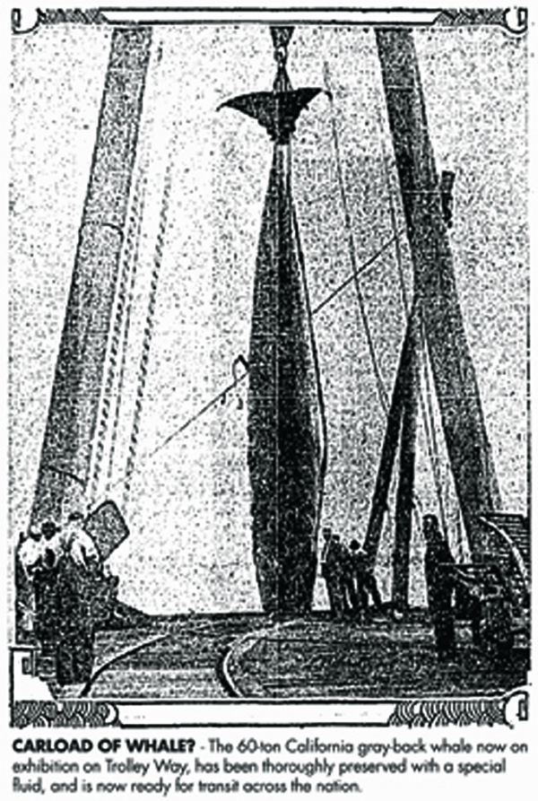
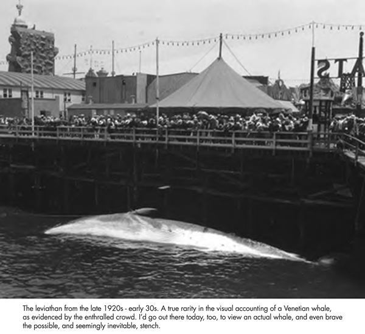
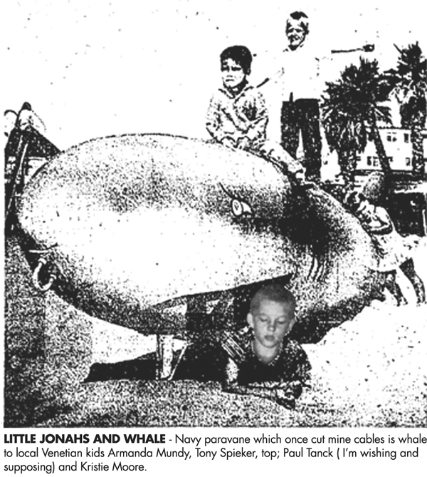
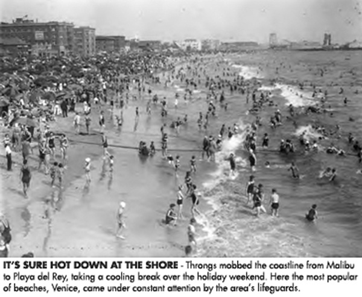

Cetaceans Galore
OK - ok, who knew there were so many local leviathan fans out there?
This being a sea-facing burg, I only thought it would be natural to expect an interest in the past stories of the men and the whales, but I was astounded by the response from last month’s column. So here’s more on Venice’s run-ins with the mighty creatures of the deep through its history…
Let’s start back in June 23, 1913. It’s recalled that a boatload of thoroughly scared fishermen walked the plank ashore from their launch, the ‘Orient,’ moored at the Venice wharf, having had experiences with which they would not forget. They occurred on their encounter with two large gray whales, twenty miles off the Venice shore that afternoon.
Capt. Johns of the boat proclaimed he would here-after carry two large harpoons in an effort to capture one of the monsters, should they come again as precariously near the boat as they did that day.
The fishing party that day was trolling for albacore in the channel, when their lines were suddenly pulled from their hands and a huge gray shape came from under the boat and floated up off the leeward. One of the whales spouted within 100 feet of the boat, and the fishermen begged the captain to pull for shore. No more fish were caught and the party headed back to Venice, anxious to be out of the region of whales.
It seems that Harvey Cain, William Murphy and Walter Kersting had had too much on their encounter with this oceanic behemoth. Much like this next encounter dated February 16, 1920 - WHALE LIKES VENICE. Sea Monster Stages Second Series of Stunts.
“The whale that yesterday visited the waters of Santa Monica Bay was seen again about noon today, cutting capers about two miles from shore. The monster mammal is thought to be nearly 100 feet long. Whether or not he entertains ambition to taste of the natives of the local Venice beaches, is creating some anxiety.
It is believed, however, that he was only desirous of scratching his back against the long wharf, which he did with so much gusto that fishermen flew to shore fearing that the pier would be rubbed on its side.
If the whale ventures again so close to shore, efforts will be made to capture him, it was said.”
Once again, possible brave heroics in the face of scared shitlessness, if truly needed. And then starts the sagas of the captured whales, and all that could run amok and afoul.
Sept 26, 1926
Whale Taken to Sea From Beach and Odor Ended
Notice was served yesterday on Capt. Bryde, said to have been in command of the vessel flying the Norwegian flag which captured a whale at sea about three weeks ago, to tow the huge creature away from Santa Monica harbor and dispose of it with explosives. The order was issued by the Department of Health of Los Angeles at the behest of James Walsh, Venice supervisor of health, when the presence of the whale near there became obnoxious.
Accordingly, Capt. Bryde caused the sea beast that had been on exhibition for several days to be towed to a point near Santa Barbara Island. The whale thus was disposed of last night. Health authorities feared contamination of the beach waters might result if it were destroyed near by.
Aug 26, 1929
Whale on Wheels Comes to Venice
School children as well as grown-ups from throughout Southern California are planning special trips here this week to visit what is said to be the first exhibit of its kind ever to tour the country, a huge California gray-back whale.
The sixty-ton monster, which has been thoroughly preserved with more than 6000 gallons of embalming fluid, injected by a crew of marine morticians, who worked night and day for two weeks in the process, will be on exhibition for six days, starting Wednesday, on a Pacific Electric spur on Trolleyway, near the site of the old roller coaster.
The whale is mounted on his own private “Pullman,” a steel railroad car, which has been specially reinforced to carry his 120,000 pounds. He has been so placed in the car to make his entire hulk visible to all who will attend.
Aug 29, 1929
WHALE OF A PROBLEM
Classification Stumps Railroad Men
If you were a railroad traffic official, how would you decide upon the freight rate for the transportation of a “carload of whale?”

According to the owners of the sixty-ton California gray-back whale now on exhibition here in a steel railroad car on Trolley Way, near the site of the old Venice roller coaster, various railroad attaches were more or less stumped by the request for rates governing this particular shipment .
The whale, unique in the annals of biological exhibits, was killed recently off San Clemente Island, and since has been thoroughly preserved with more than 6000 gallons of special fluid, injected by a crew of marine morticians. It will tour the country in the special steel car it is now aboard.
Since the novel request of the whale’s owners for rates was the first in the history of American railroading which involved tariffs for the shipment of a whole whale, it became necessary for all the local agents to communicate with their home offices and they in turn to wire the Interstate Commerce Commission, at Washington, presenting a petition for a specific rate. The result is that now, the whale will move over all railroads as a carload of “scenery” of the deep-sea variety.
And yes, another first for the sea-side villa known as Venice. Amazing, isn’t it?
Now, just 14 years later, we find this story, “Fisherman Seeks Aid To Move Dead Whale Off Beach.”
Dateline: April 19, 1944, Venice, California
There is no fun in owning a dead whale.
Venice lifeguards arrived at that conclusion yesterday when a harassed fisherman, who did not identify himself, came to them with the request that they take his dead whale off the beach at Brooks Ave. and tow it back to Santa Monica for him.
The whale, tied to a mooring line outside the Santa Monica yacht harbor over the week-end, apparently broke loose during the night.
Lifeguards explained that this was beyond the range of their official duties, but added they would be glad to assist if they found any way of moving the mammal, which weighs several tons.
Ah, those lifeguards, the best in the world. Even then, even now.
However, two days later, on April 21st, 1944 we receive this updated report about this almighty cetacean -
PROBLEM OF ODOROUS WHALE FINALLY SOLVED
This whale proved to be a Jonah in all respects save two. Victory gardeners (now that takes me back) will get a ton of fertilizer out of it and there will be 200 gallons of whale oil for whale oil lovers.
Catching a 21-foot, five-ton whale in a net would be considered quite a feat of fishermanship by an amateur, but Vince Albano and his crew, commercial fishermen, got nothing but a headache when, last Friday, this whale got tangled in their nets while they were fishing off Point Dume.
Several hundred dollars’ worth of damage was done to the nets.
On top of that, the whale broke loose from its moorings after they had towed it to Santa Monica.
Venice Glad and Sorry
Due to ocean currents, the scene shifted to Venice where the whale went ashore beneath the pier. At first the whale proved a big added attraction to Venice beach crowds, but as the days went by Venice began to wish Santa Monica had kept the whale there. No longer was the massive mammal drawing crowds, but threatening to drive them away.
And yet, could this be the one I’ve seen photos of? A big leviathan strapped to the side of the Kinney pier, with hordes of gawkers staring down entranced at the sight of this “monster of the sea” so close. This finally shows proof that there once was a whale at Venice beach, and in all actuality, it might have exploded, as alluded to by Jim Hayes in last month’s column. But probably not. This photo is credited to the late 20s, early 30s, probably showing the one eradicated by Capt. Bryde in 1926, not 1944. Drats!

Meanwhile Albano was working overtime to find a buyer who wanted to convert a whale into fertilizer and whale oil, but a whale ashore is a much more difficult package to deliver than one in position to be towed to a pier hoist. Albano’s hopes of a price that would offset his loss (net) went glimmering.
Deal in Bad Odor
The whole deal was in bad odor until J. R. Taylor, superintendent of Los Angeles refuse collection, and the Inland Fertilizer Co. of 4144 Bandini Blvd. got together yesterday and figured out a way. Bulldozer tractor No. 44125, of the Department of Public Works, proved to be the real hero of the day. It dragged and bulldozed the whale - aura and all, but now minus a tail and several other spare parts - from beneath the pier and hoisted it aboard a big street maintenance department truck.
Officials said no money would be paid for the whale. It seems prices are not quoted on ripe whales. Albano, of course, was the loser, but Venice sighed with relief and breathed freely again.
Seemingly on through to the late 50s, when a used Navy paravane - a torpedo-shaped device equipped with sharp teeth and towed alongside a ship to cut the mooring cables of submerged mines - began serving as a friendly whale to kids at the recently refurbished Venice Athletic Center playground in the summer of 1959. This particular whale was made from a piece of salvaged Navy equipment, weighing originally 700 pounds and approximately 18 feet long. The children generally rode its back and climbed over it, gaining a vicarious thrill, as all kids would have, at the beach playground. I was personally 8 going on 9 at the time, and if I had lived out here on the best coast, it would have probably been me featured in the accompanying photo.

Then, on to the 60s. Like from January 21st, 1962 baby!
Gray Whale Washed Onto Venice Beach
A 15-ft. Caifornia gray whale, believed to be the loser in a battle with sharks, was washed ashore at Ocean Front Walk and Rose Avenue shortly before noon Saturday.
The dead mammal, weighing more than 1,000 lb., was discovered by children playing on the beach, police reported. That probably would have been me again, a couple and a half years later, if I’d lived here, of course. Playing in the late morning surf in late January, just south of the Ocean Park Pier. I’d want to be out swimming with my buds and then happen to see a dead whale wash ashore. How cool!
Officers said the whale’s back bore gashes 4 in. wide and 5 in. deep, indicating it had been attacked by sharks. Police said the whale would be removed by the sanitation department.
But that’s nothing like this next episode…
From October 31st, 1983 comes this un-ghoulishly account of Venice Beach swimmers getting an unexpected thrill when they found themselves sharing the inshore waters with a 30-foot Pacific gray whale.
Under the headline Swimmers Have Whale of a Day; Gray One Cruises Venice Beach, it was noted that lifeguard Nick Steers said the big mammal cruised 20 to 30 yards from shore, evidently en route to Mexican waters for the winter. No one was frightened at the time, Steers said, and most enjoyed the show. The whale seemed to pay no attention at all, and went on its way.
And as with the glory of Mother Nature, everything turns around. The ocean begets life, and then death, again. Here’s another newspaper clip -
Dead Whale
A dead 25-foot humpback whale that washed onto Venice Beach had apparently been accidentally rammed and killed by a Navy destroyer, biologists reported on March 6, 1995.
The carcass washed ashore Sunday, said biologist Tom Lewis, a member of the Natural History Museum of Los Angeles County's whale team. John Heyning, the head of the museum’s marine mammal program, spent a long day at Venice Beach recovering the remains of this humpback whale - a rarity as strandings go.
It was the first time a humpback, an endangered species, was found on a Southern California beach in more than a decade. “We think the propeller killed it,” Lewis said.
The whale’s tail was missing and its body badly gashed. It had probably been hit five or six days before it washed ashore, Lewis said.
The body was far too large to move - adult humpbacks can weigh up to 60 tons - so the recovery team decided to take just the head, which, pound for pound, would give them the most information about the animal’s life. After cutting through skin, blubber, and muscle with sickle-like Japanese flensing knives, they hoisted the severed head onto the back of a flatbed truck and transported it to the warehouse to be cleaned and analyzed
Researchers planned to collect tissue samples for DNA studies, blubber for analysis of manmade contaminants, and the skull. The rest of the carcass was buried on the beach.
And suddenly, there came another incidence of a stranded baby whale …
Baby Whale
A lost baby whale washed around helplessly in the surf of a popular Southern California beach on January 12, 1997. A search for its missing mother was unsuccessful.
Lifeguards hoped the 3-day-old whale would be reunited with its mother before the weakened calf dies from starvation.
The 12-foot-long, 1,500-pound whale was spotted on Venice Beach Friday morning. It beached itself several times.
“It was rolling helplessly in the surfline,” said Los Angeles County Lifeguards spokesman Danny Douglas.
Overnight, lifeguards monitored the lost baby whale from a distance. They worried that without nursing, the baby would soon die.
“We want to keep people away, boaters away as much as possible so that if the mother does come back, it has access to its baby,” Douglas.
The baby apparently became separated from its mother during the whales’ annual migration from Alaska to Baja California.
Lifeguards and the Coast Guard searched for its mother or a pod it may have come from. They spotted a lone adult whale to the north near the Santa Monica Pier Friday afternoon, but later lost sight of it and were forced to call off the search.
I don’t know, but it seems like the times of good old ocean-viewing whales spouting along the Venetian coast might well be long gone. I know I’d truly marvel at the sight of one of these oceanic leviathans up close. And hope I’d have my camera with me to catch this momentous marvel.
So say I - how say ye?
< footnotes follow >
WHALE
Etymology: Middle English, from Old English hwael; akin to Old High German hwal (whale) and perhaps to Latin squalus (sea fish)
Synonyms: giant, behemoth, leviathan, mammoth, monster, cetacean
Scientific order: cetacea
Local examples: Humpback, Sperm, California Gray-back
--
9.5.38
Roosevelt Highway was jammed from Malibu Beach to Playa del Rey, with automobiles stopped beside the highway and an overflow parked along canyon roads.

Bathers swarmed the strand and lifeguards reported several had been assisted from the water, none, however, requiring medical attention.
The amusement zones at Ocean Park and Venice were crowded with milling throngs, with expectations of even larger crowds to participate in the holiday festivities. |